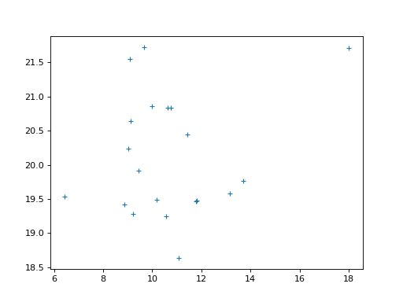

\(\newcommand{L}[1]{\| #1 \|}\newcommand{VL}[1]{\L{ \vec{#1} }}\newcommand{R}[1]{\operatorname{Re}\,(#1)}\newcommand{I}[1]{\operatorname{Im}\, (#1)}\)
Validating the GLM against scipy¶
>>> import numpy as np
>>> import numpy.linalg as npl
>>> import matplotlib.pyplot as plt
>>> # Print array values to 4 decimal places
>>> np.set_printoptions(precision=4)
Make some random but predictable data:
>>> # Make random number generation predictable
>>> np.random.seed(1966)
>>> # Make a fake regressor and data.
>>> n = 20
>>> x = np.random.normal(10, 2, size=n)
>>> y = np.random.normal(20, 1, size=n)
>>> plt.plot(x, y, '+')
[...]
{kind=link}
{kind=link}

Do a simple linear regression with the GLM:
\[ \begin{align}\begin{aligned} \newcommand{\yvec}{\vec{y}}
\newcommand{\xvec}{\vec{x}}
\newcommand{\evec}{\vec{\varepsilon}}
\newcommand{Xmat}{\boldsymbol X}
\newcommand{\bvec}{\vec{\beta}}
\newcommand{\bhat}{\hat{\bvec}}
\newcommand{\yhat}{\hat{\yvec}}
\newcommand{\ehat}{\hat{\evec}}
\newcommand{\cvec}{\vec{c}}
\newcommand{\rank}{\textrm{rank}}\\\begin{split} y_i = c + b x_i + e_i \implies \\\end{split}\\\yvec = \Xmat \bvec + \evec\end{aligned}\end{align} \]
>>> X = np.ones((n, 2))
>>> X[:, 1] = x
>>> B = npl.pinv(X).dot(y)
>>> B
array([ 19.3567, 0.0723])
>>> E = y - X.dot(B)
Build the t statistic:
\[ \begin{align}\begin{aligned}\begin{split}\newcommand{\cvec}{\vec{c}}
\hat\sigma^2 = \frac{1}{n - \rank(\Xmat)} \sum e_i^2 \\\end{split}\\t = \frac{\cvec^T \bhat}
{\sqrt{\hat{\sigma}^2 \cvec^T (\Xmat^T \Xmat)^+ \cvec}}\end{aligned}\end{align} \]
>>> # Contrast vector selects slope parameter
>>> c = np.array([0, 1])
>>> df = n - npl.matrix_rank(X)
>>> sigma_2 = np.sum(E ** 2) / df
>>> c_b_cov = c.dot(npl.pinv(X.T.dot(X))).dot(c)
>>> t = c.dot(B) / np.sqrt(sigma_2 * c_b_cov)
>>> t
0.82220...
Test the t statistic against a t distribution with df degrees of freedom:
>>> import scipy.stats
>>> t_dist = scipy.stats.t(df=df)
>>> p_value = 1 - t_dist.cdf(t)
>>> # One-tailed t-test (t is positive)
>>> p_value
0.21085...
>>> # Two-tailed p value is just 2 * one tailed value, because
>>> # distribution is symmetric
>>> 2 * p_value
0.42171...
Now do the same test with scipy.stats.linregress:
>>> res = scipy.stats.linregress(x, y)
>>> res.slope
0.07227...
>>> res.intercept
19.35665...
>>> # This is the same as the manual GLM fit
>>> np.allclose(B, [res.intercept, res.slope])
True
>>> # p value is always two-tailed
>>> res.pvalue
0.42171...
>>> np.allclose(p_value * 2, res.pvalue)
True
Now do the same thing with the two-sample t-test.
>>> X2 = np.zeros((n, 2))
>>> X2[:10, 0] = 1
>>> X2[10:, 1] = 1
>>> X2
array([[ 1., 0.],
[ 1., 0.],
[ 1., 0.],
[ 1., 0.],
[ 1., 0.],
[ 1., 0.],
[ 1., 0.],
[ 1., 0.],
[ 1., 0.],
[ 1., 0.],
[ 0., 1.],
[ 0., 1.],
[ 0., 1.],
[ 0., 1.],
[ 0., 1.],
[ 0., 1.],
[ 0., 1.],
[ 0., 1.],
[ 0., 1.],
[ 0., 1.]])
>>> B2 = npl.pinv(X2).dot(y)
>>> E2 = y - X2.dot(B2)
>>> c2 = np.array([-1, 1])
>>> df = n - npl.matrix_rank(X2)
>>> sigma_2 = np.sum(E2 ** 2) / df
>>> c_b_cov = c2.dot(npl.pinv(X2.T.dot(X2))).dot(c2)
>>> t = c2.dot(B2) / np.sqrt(sigma_2 * c_b_cov)
>>> t
-0.30792...
>>> t_dist = scipy.stats.t(df=df)
>>> # One-tailed p value, for negative value
>>> p_value_2 = t_dist.cdf(t)
>>> p_value_2
0.38083...
>>> # Two-tailed p value
>>> p_value_2 * 2
0.76167...
The same thing using scipy.stats.ttest_ind for t test between two
independent samples:
>>> scipy.stats.ttest_ind(y[:10], y[10:])
Ttest_indResult(statistic=0.30792..., pvalue=0.76167...)